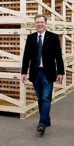

Bericht zur 2. Walzstation – allsafe JUNGFALK
Schon während der Vorbereitung auf meine zweite Walzstation wurde mir klar, dass ich diese bei einem sehr besonderen Unternehmen verbringen würde. Wie besonders, dass wurde mir bereits beim Betreten der Firmenzentrale klar. Ein persönlicher, digitaler Willkommensgruß und dazu die „Sprüchewand“ beim Empfang. So ganz und gar nicht provinziell, wie auch ich beim Standort Engen doch vermutet hätte. Ich war beeindruckt und musste dies gleich bildlich festhalten!
Der erste Tag ging weiter mit einem sehr netten Gespräch mit dem Geschäftsführer Herrn Lohmann und einer Betriebsführung durch die 10.000 Quadratmeter. Und schon wieder war ich beeindruckt, auch von der schon umgesetzten Einbeziehung der Mitarbeiter durch ein Infoboard mit allen wichtigen Unternehmenszahlen und Leitlinien. Der monatliche Geschäftsbericht, Ziele und Ist-Ergebnis für alle einzusehen und nachvollziehbar. Ja, so kann man sein Personal bestens zum unternehmerischen Mitdenken führen. Denn: Ohne konkrete Informationen, das schließt eben auch wirtschaftliche Kennzahlen und interne Fakten mit ein, werde ich es nicht schaffen, meine Mitarbeiter auf eine verantwortungsbewusste, unternehmerische Sichtweise einzuschwören. Anhand des Infoboards zeigte sich schon, wie ernst es Herrn Lohmann damit ist. Endlich mal nicht nur schöngefärbte Worte einer Unternehmensleitung!

Prozessorientierung statt starrer Abteilungseinteilung
Spannend – und für mich in der Firmenpraxis völlig neu – bei allsafe JUNGFALK ist alles nach Prozessen und nicht nach Abteilungen aufgebaut. Die Basis für alles Handeln und die Prozesse dienen die Leitlinien des Unternehmens genauso wie der Kundenbedarf. Expertenwissen und Kundenenthusiasmus gehen damit einher. Über allem stehen die vier definierten Unternehmenswerte Eigenverantwortung, Fairness, Innovation und Kundenorientierung. Um den letztgenannten Wert allen zu verdeutlichen, hängt auch der Kundenzufriedenheitsindex am Infoboard aus. Und der ist beachtlich: 96,4% für die vergangenen zwölf Monate
Balanced Score Card und KVP (Kontinuierlicher Verbesserungsprozess) als Managementinstrumente sind bei allsafe genauso selbstverständlich wie das kommunikative Miteinander. Häufig sah ich Mitarbeiter in kleinen Gruppen zusammen sitzen, statt sich ständig Mails hin und her zu schicken. Es wird sehr konzentriert gearbeitet, Ablenkung durch ständiges Bedienen von Smartphones findet meiner Beobachtung nach nicht statt, der Umgang miteinander ist sehr freundlich und wenig stressbelastet. Vielleicht ein Vorteil gegenüber dem ständig bewegten Leben in einer Großstadt?
Großraumbüro ohne Nachteile?
Als Professional Organizer war ich gespannt auf die Art und Ausstattung der Büros. Auch wenn ich Großraumbüros gegenüber eher skeptisch bin, bei allsafe wurde zum Beispiel der Lärmpegel reduziert, indem jeder Mitarbeiter mit mobilen Telefoneinheiten längere Gespräche in einem Extraraum führt. Flexibilität der Arbeitsplätze ist durch höhenverstellbare Schreibtische, unterschiedliche Monitore und Rollcontainer gegeben. Die Arbeitsplätze zeichnen sich durch konsequente Ordnung aus.
Allerdings fällt dadurch auftretende Unordnung auch in diesem vorbildlichen Großraumbüro sehr schnell ins Auge. Da die Schreibtische frei im Raum stehen, werden die Kabel der Rechner – oder hier eher der Kabelsalat – schnell zu Stolperfallen. Und optisch passt das wenig zu den design-orientierten und aufgeräumten Büromöbeln. Mir kam dazu eine Idee, ein adäquates Produkt zu entwickeln, um solchem Abhilfe zu schaffen (mehr verrate ich hier aber nicht ;-)).
Erste Station: der Produktentstehungs- bzw. -entwicklungsprozess
Selbstverantwortung wird bei allsafe groß geschrieben, daher sollte ich mich frei bewegen und niemanden für jede geplante Maßnahme um Erlaubnis fragen. Auch wenn ich mich daran erst gewöhnen musste, Herr Lohmann formulierte diese Erwartung an mich sehr klar. Für eine erste Übersicht arbeitete ich mit einzelnen Mitarbeitern an ihren Tischen. Erfreulich, wie gut vorbereitet jeder auf unser gemeinsames Projekt war und mir offen und bereitwillig gegenüber trat. Ich empfinde es nicht als selbstverständlich, dass sich Kollegen zusätzlich zu ihrem zeitaufwändigem Tagesgeschäft für Zusatzarbeit mit mir begeistern können. Obwohl die Büros bei allsafe einen aufgeräumten Eindruck auf mich machten, blieben mir doch die schlummernden Altlasten in den Einbauschränken nicht verborgen. Als Professional Organizer ein mir bekanntes Phänomen: Trotz vorherrschender elektronischer Bearbeitung besteht Unsicherheit bei der Archivierung alter Dokumente. Es fehlen allgemeingültige und für alle nachvollziehbare Regeln dazu. Diese gemeinsam zu erarbeiten wurde also eine meiner Aufgaben hier in Engen.
Lesen Sie weiteres und mein Fazit hier!
Weitere Artikel

Meine letzte Walzstation – schee war’s
Der Organizer verabschiedet sich von einer insgesamt wunderbaren Walz. Meine letzte Walzwoche liegt hinter mir und die Eindrücke zu Vaude in Tettnang klingen noch nach. Mein erster Eindruck Schon am ersten Tag traf ich auf eine …

Meine Wanderschaft nähert sich dem Ende
Sie erinnern sich noch? Drei Walzstationen habe ich auf meiner Wanderschaft seit Herbst 2013 absolviert, nun folgt nächste Woche die 4. und damit auch letzte. Noch einmal zur Erinnerung: Besonders erfreulich finde ich die …